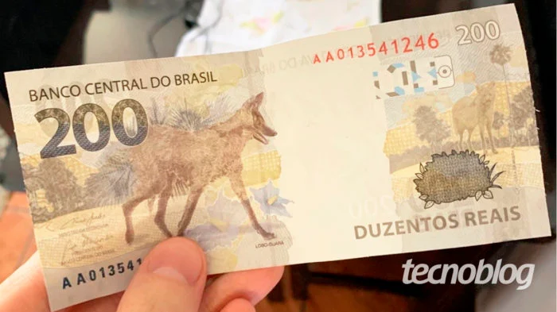

Por Emerson Alecrim
20/11/2020 às 18:07
site: Tecnoblog
Esta é a primeira semana de funcionamento do Pix. A estreia foi marcada por algumas dificuldades, mas nada preocupa mais o usuário do que o fator segurança: o sistema está preparado para mitigar fraudes ou roubos, por exemplo? Ao Tecnoblog, o Banco Central garantiu que sim e pontuou alguns dos mecanismos de proteção.
Um dos mecanismos é o limite de transferência de valores. Este, porém, não é definido pelo Banco Central. Cabe a cada instituição participante do Pix estabelecer o valor máximo para realização de transações com o qual os seus clientes podem contar.
A definição de limites pode ser baseada em diversos critérios, como perfil do cliente, horário de realização e canal de atendimento (aplicativo ou caixa eletrônico, por exemplo). A instituição pode definir limites para cada transação e para o total de operações realizadas em um dia ou mês.
Além disso, o limite pode variar para o mesmo cliente de acordo com as circunstâncias. As regras para isso dependem:
Ainda de acordo com o Banco Central, a instituição financeira deve dar ao cliente a opção de solicitar alteração do limite, acatando pedidos de diminuição do valor. Se a solicitação for de aumento, a instituição poderá acatá-la ou não, seguindo seus próprios critérios.
É preciso levar em conta ainda que as regras para definição de limites podem mudar com base na observação do mercado. Podemos traçar um paralelo com os limites de saques nos caixas eletrônicos. Cada banco trabalha com um limite de saque diário nos terminais de autoatendimento.
É comum o limite ser ainda mais restrito no período das 22:00 às 6:00, ficando na casa dos R$ 300, usualmente. As restrições para saques em caixa eletrônico à noite foram adotadas no final da década de 1990 como reação aos casos de roubo e sequestro que estavam em alta naquela época.
A questão do limite de transferência é importante porque um mecanismo do tipo pode evitar que o usuário sofra um grande prejuízo se estiver sendo coagido a fazer transações via Pix. Isso pode acontecer em caso de sequestro relâmpago, por exemplo.
Mas, quanto a isso, o Banco Central explica que o sistema conta com “motores antifraude” operados pelas instituições. Esses mecanismos são capazes de analisar uma série de parâmetros para identificar transações atípicas.
Se alguma movimentação de valor levantar suspeita, a transação irá para uma análise. Nessas circunstâncias, a operação não será realizada em até 10 segundos. Em vez disso, a transação poderá levar até 30 minutos para ser concluída ou, à noite, até 60 minutos.
O usuário será avisado se isso acontecer. A operação retida será submetida a uma checagem criteriosa que visa identificar se uma operação fraudulenta está em curso ali. Até certo ponto, trata-se de uma abordagem similar a dos cartões de crédito: embora fraudes nessa modalidade sejam frequentes, a maior parte delas é barrada por mecanismos de proteção.
Em caso de suspeita de fraude ou fraude consumada, um marcador é acionado imediatamente dentro do Diretório de Identificadores de Contas Transacionais (DICT), o banco de dados que registra as chaves de cada usuário. Assim, as demais instituições poderão barrar operações relacionadas às contas envolvidas.
Ainda com relação ao risco de sequestros e outros crimes, o Banco Central reforça que as transações via Pix são integralmente rastreáveis por corresponderem a operações conta a conta. Saques em espécie, por outro lado, não são rastreados (o banco não registra o recebedor do dinheiro), o que facilita a ação de criminosos.
Uma transação via Pix não pode ser desfeita. Por isso, uma dúvida que tem surgido nos últimos dias é: há ressarcimento em caso de fraude? Em seu site, o Banco Central explica apenas que “caberá ao prestador de serviço de pagamento a análise do caso de fraude e o eventual ressarcimento”.
Essa é mesmo uma questão delicada. Fraudes envolvendo cartão de crédito, por exemplo, tendem a ser estornadas apenas se ficar claro que a ação não ocorreu por falha de procedimento do usuário.
É por isso que o chamado “golpe do motoboy” (quando a vítima recebe uma ligação falsa em nome do banco que a orienta a cortar seu cartão e entregá-lo a um motoboy), por exemplo, costuma ser tratado judicialmente. Nessas circunstâncias, a instituição pode se recusar a fazer o ressarcimento porque a pessoa foi vítima de uma ação de engenharia social, não de uma vulnerabilidade sistêmica.
A Federação Brasileira de Bancos (Febraban) foi procurada pelo Tecnoblog para comentar a segurança do Pix, mas não tinha dado retorno até a publicação deste texto.
De todo modo, em workshop realizado no fim de outubro, a organização sinalizou que a maior preocupação com a segurança não está dentro do sistema do Pix em si, mas em ações que envolvem justamente engenharia social, como mensagens de phishing recebidas por e-mail ou WhatsApp.